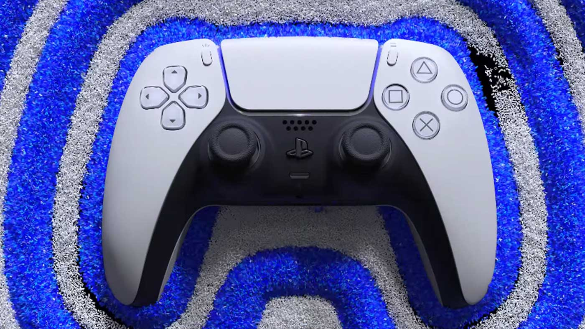

PS5 and Dual Sense Haptics to the Gaming
The PS5 is here and it really feels like a generational jump for support gaming. With its amazing illustrations tech and fiercely imaginative DualSense regulator, Sony's new comfort takes into account a degree of submersion that essentially was preposterous on past consoles. The framework's extremely quick SSD is an exacting distinct advantage, stacking games in only seconds — and now and again, furnishing better approaches to interface with them.
It's been examined to death, yet the PS5 is a genuinely enormous piece of apparatus. Sony's 15.4 x 10.2 x 4.1-inch reassure predominates basically any gaming framework that is turned out in the previous decade, including the PS4 Slim and the PS4 Pro. It's likewise far greater than its new cutting edge rival in the Xbox Series X, and makes the Xbox Series S resemble a kids' toy. That monstrous undercarriage permits the PS5 to siphon out some genuine execution while remaining generally cool and calm (which we'll speak more about later), however the sheer size of the new PlayStation could be an issue for those with little diversion territories. Except if you plan on putting your PS5 on the floor, you'll probably require a devoted little table in the event that you plan on standing it vertically. I had the option to fit the PS5 in my diversion community in a flat direction, however scarcely. In that capacity, you'll need to quantify your accessible space before you set up a PS5 at home. Talking about direction, the PS5 incorporates a separable stand that permits you to situate the enormous reassure vertically or evenly. The stand screws into the lower part of the comfort in vertical mode (the PS5 incorporates a screw, yet no apparatus to tighten it), and braces on to the PS5's back port territory in even mode.
It'd be pleasant if the PS5 incorporated a device for unscrewing the base, however I had a simple enough time utilizing a coin to connect and eliminate it. The framework stands up safely in vertical mode with the base connected, yet I discovered the base to be undeniably more finicky in flat direction. It took me a couple of attempts before I could get it to lay level safely on the base. I at last got the PS5 to stand by evenly in my diversion place, however the way that the support slid off the base effectively except if it was situated perfectly provides me some opportunity to stop and think. All things considered, I'll probably be saving the PS5 in flat direction for the vast majority of my experience with it, basically on the grounds that I'm stressed over inadvertently tipping over the madly tall body while it sits on my table (particularly when my hyperactive nephews are finished).
The PS5 interface is a spotless, alluring and smart advancement of the PS4 programming. Bouncing all through games and exploring menus feels quick, to where the PS4 menu presently feels drowsy and jumbled by correlation. And keeping in mind that there are a few highlights I'd prefer to see added to the PS5 interface, it acquaints some energizing new ways with get to what exactly you're playing much quicker. The home screen will look natural to PS4 proprietors, with a level line of tiles that features your latest games. At the point when you feature a game, that title's craft will assume control over the whole home screen while its music plays out of sight, which is a slick tasteful touch. There's a helpful Explore tab that shows news and updates, just as a Game Library tab that permitted me to immediately begin downloading my assortment of PS4 titles. Similar as on PS4, the PS5 allows you to catch recordings and screen captures, or transfer to YouTube or Twitch with a brisk tap of the Create button. I like that the PS5 programming looks clean in general, however I do wish there were a possibility for getting sorted out your games into organizers, as there is on PS4. And keeping in mind that it's cool seeing the foundation adjust to whichever game you have featured, I'm astonished there's no alternative to set custom backdrops all things being equal. Long-lasting PS4 clients should shake some muscle memory, as a tap of the PlayStation button currently raises a control community that allows you to switch applications, see your companions, check warnings, screen your regulator's battery life and more from the lower part of your screen. Even better, you can modify the control place to have brisk admittance to highlights, for example, network settings, openness choices and broadcast controls. It's a major improvement from the PS4's fast menu, which took up a far greater piece of the screen and wasn't as smart or adaptable.
Smart and clean programming is incredible, yet the PS5 interface truly wakes up when you begin playing a game. Tapping the PlayStation button while playing a PS5 game raises the Activities menu, which shows data, for example, the current advancement of your main goal, a bunch of prizes you can follow, or a rundown of in-game exercises that you can bounce directly into. For instance, I had the option to jump into a progression of side missions and difficulties directly from the Activities menu in Spider-Man: Miles Morales without having to really discover them in-game, saving personal time I'd need to in any case spend swinging around Manhattan. You can likewise get to the Activities menu directly from your Game Library before you even boot up a game, which means I had the option to bounce directly into a particular level in Astro's Playroom without managing any menus. As somebody who doesn't generally have a huge load of leisure time, the capacity to leap to a particular piece of a game at a framework level isn't simply valued — it's tremendously progressive. While it might appear as though a minor admission to a few, the Activities menu could wind up changing the manner in which we mess around, and I'm truly anxious to perceive how engineers exploit it in the coming years. My greatest issue with the PS5 on a product level is that, not normal for the Xbox Series X and S, Sony's comfort doesn't appear to have the option to suspend numerous titles without a moment's delay. While Xbox's Quick Resume highlight allows you consistently to hop between about six games while getting right where you left off in every one, the PS5 expects you to boot up each game without any preparation. More disappointing that the reassure doesn't caution you when your current game will shut for another one, which could prompt you losing unsaved advancement. While the PS5's heap times are quick to the point that the absence of Quick Resume is definitely not a gigantic issue, it's a bummer that Sony's support doesn't have a response to one of the Series X's most advantageous highlights.
Dual Sense
The PS5 DualSense controller just might be the most next-gen thing about Sony’s new console. The gamepad’s haptic feedback, adaptive triggers and built-in speaker work together brilliantly, creating a level of tactile immersion I’ve simply never experienced while playing a game before. The DualSense especially shines in Astro’s Playroom, a free, pre-installed title built specifically to showcase what Sony’s new controller can do. In this colorful 3D platformer, you can feel and hear the subtle impact of grains of sand while walking through a storm, or experience a smooth gliding sensation when skating over ice, just to name a few examples. Everything from pulling on a rope to gliding around in a jetpack generates an extremely detailed level of force feedback. It’s the kind of thing you truly need to feel to believe.